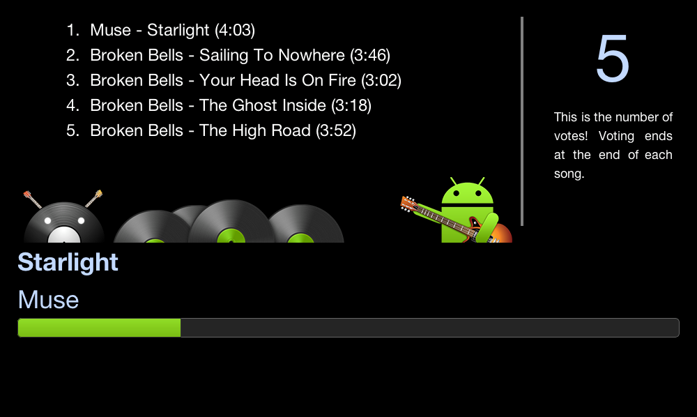
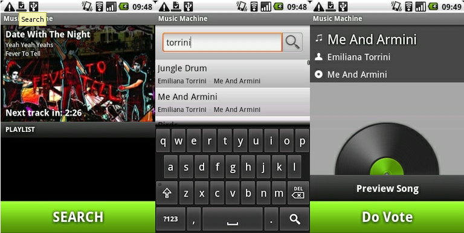
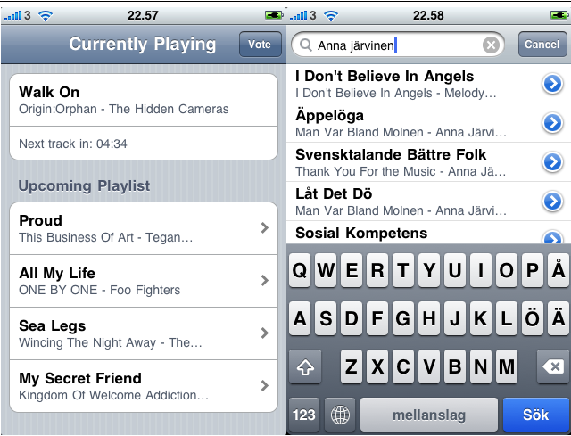
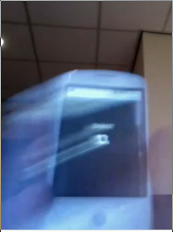
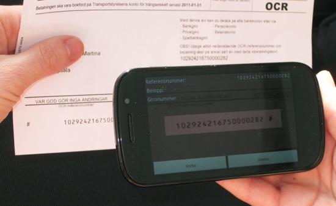
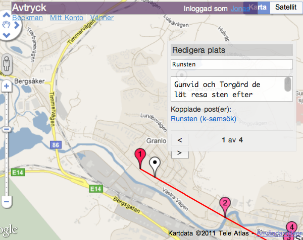
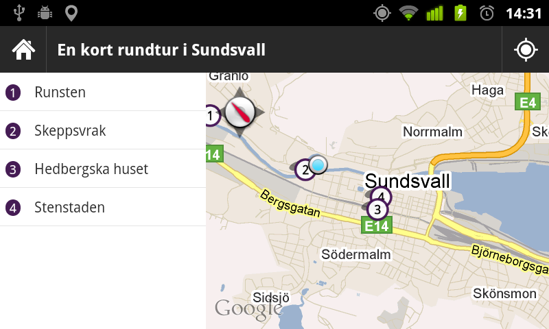

Konsult på it-huset
johan@markupartist.com
@johanni







Skräp Bara fel hela tiden !
Snabb och bra. Mkt. Bättre än sl.se
Har funkat bra förutom att den visade fel på nattbuss 697 då den tog fel på fredagens och lördagens tider.